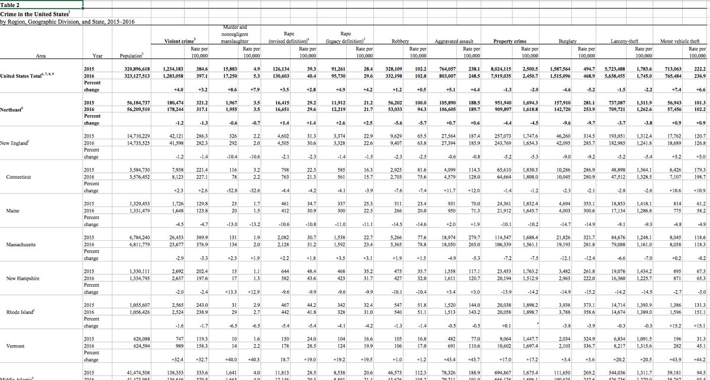
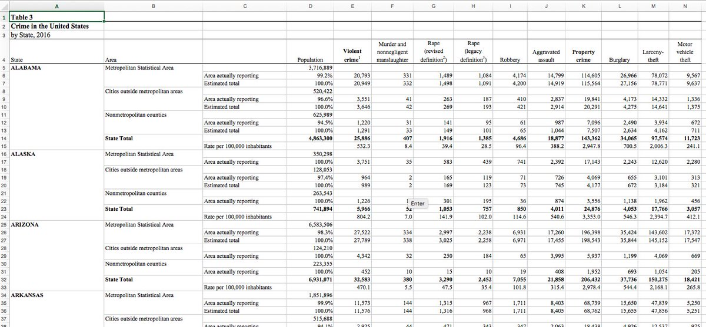

9.3 US Crime
These are two tables of numbers of crimes in the USA, by state and category of crime. Confusingly, they’re numbered Table 2 and Table 3. Table 1 exists but isn’t included in this case study because it is so straightforward.
9.3.1 Table 2

9.3.1.1 Simple version
This is straightforward to import as long as you don’t care to organise the hierarchies of crimes and areas. For example, Conneticut is within the division New England, which itself is within the region Northeast, but if you don’t need to express those relationships in the data then you can ignore the bold formatting.
The only slight snag is that the header cells in row 5 are blank. There is a
header for the units “Rate per 100,000”, but no header for the units “Count” –
the cells in those positions are empty. It would be a problem if the cells
didn’t exist at all, because behead("N", "unit") wouldn’t be able to associate
data cells with missing header cells. Fortunately they do exist (because they
have formatting), they are just empty or NA. To make sure they aren’t
ignored, use drop_na = FALSE in behead(), and then later fill the blanks in
the units column with "Count".
cells <-
xlsx_cells(smungs::us_crime_2) %>%
mutate(character = map_chr(character_formatted,
~ ifelse(is.null(.x), character, .x$character[1])),
character = str_replace_all(character, "\n", " "))
cells %>%
dplyr::filter(row >= 4L) %>%
select(row, col, data_type, character, numeric) %>%
behead("NNW", "crime") %>%
behead("N", "unit", drop_na = FALSE) %>%
behead("WNW", "area") %>%
behead("W", "year") %>%
behead("W", "population") %>%
dplyr::filter(year != "Percent change") %>%
mutate(unit = if_else(unit == "", "Count", unit)) %>%
select(row, data_type, numeric, unit, area, year, population, crime) %>%
spatter(unit) %>%
select(-row)## # A tibble: 1,320 x 6
## area year population crime Count `Rate per 100,…
## <chr> <chr> <chr> <chr> <dbl> <dbl>
## 1 United States Total 2015 320896618 Aggravate… 7.64e5 238.
## 2 United States Total 2015 320896618 Burglary 1.59e6 495.
## 3 United States Total 2015 320896618 Larceny-t… 5.72e6 1784.
## 4 United States Total 2015 320896618 Motor veh… 7.13e5 222.
## 5 United States Total 2015 320896618 Murder an… 1.59e4 4.9
## 6 United States Total 2015 320896618 Property … 8.02e6 2500.
## 7 United States Total 2015 320896618 Rape (leg… 9.13e4 28.4
## 8 United States Total 2015 320896618 Rape (rev… 1.26e5 39.3
## 9 United States Total 2015 320896618 Robbery 3.28e5 102.
## 10 United States Total 2015 320896618 Violent c… 1.23e6 385.
## # ... with 1,310 more rows9.3.1.2 Complex version
If you do mind about grouping states within divisions within regions, and
crimes within categories, then you have more work to do using enhead() rather
than behead().
- Select the header cells at each level of the hierarchy and store them in
their own variables. For example, filter for the bold cells in row 4, which
are the categories of crimes, and store them in the
categoriesvariable. - Select the data cells, and use
enhead()to join them to the headers.
In fact the headers unit, year, population can be handled by behead(),
because they aren’t hierarchichal, so only the variables category, crime,
region, division and state are handled by enhead().
cells <-
xlsx_cells(smungs::us_crime_2) %>%
mutate(character = map_chr(character_formatted,
~ ifelse(is.null(.x), character, .x$character[1])),
character = str_replace_all(character, "\n", " "))
formats <- xlsx_formats(smungs::us_crime_2)
categories <-
cells %>%
dplyr::filter(row == 4L,
data_type == "character",
formats$local$font$bold[local_format_id]) %>%
select(row, col, category = character)
categories## # A tibble: 2 x 3
## row col category
## <int> <int> <chr>
## 1 4 4 Violent crime
## 2 4 16 Property crimecrimes <-
cells %>%
dplyr::filter(row == 4L, data_type == "character") %>%
mutate(character = if_else(character %in% categories$category,
"Total",
character)) %>%
select(row, col, crime = character)
crimes## # A tibble: 13 x 3
## row col crime
## <int> <int> <chr>
## 1 4 1 Area
## 2 4 2 Year
## 3 4 3 Population
## 4 4 4 Total
## 5 4 6 Murder and nonnegligent manslaughter
## 6 4 8 Rape (revised definition)
## 7 4 10 Rape (legacy definition)
## 8 4 12 Robbery
## 9 4 14 Aggravated assault
## 10 4 16 Total
## 11 4 18 Burglary
## 12 4 20 Larceny-theft
## 13 4 22 Motor vehicle theftregions <-
cells %>%
dplyr::filter(row >= 6L,
col == 1L,
data_type == "character",
formats$local$font$bold[local_format_id]) %>%
select(row, col, region = character)
regions## # A tibble: 5 x 3
## row col region
## <int> <int> <chr>
## 1 6 1 United States Total
## 2 9 1 Northeast
## 3 45 1 Midwest
## 4 90 1 South
## 5 153 1 Westdivisions <-
cells %>%
dplyr::filter(row >= 6L,
col == 1L,
data_type == "character",
!formats$local$font$bold[local_format_id],
!str_detect(character, "^ {5}")) %>%
select(row, col, division = character)
divisions## # A tibble: 21 x 3
## row col division
## <int> <int> <chr>
## 1 12 1 New England
## 2 33 1 Middle Atlantic
## 3 48 1 East North Central
## 4 66 1 West North Central
## 5 93 1 South Atlantic
## 6 123 1 East South Central
## 7 138 1 West South Central
## 8 156 1 Mountain
## 9 183 1 Pacific
## 10 201 1 Puerto Rico
## # ... with 11 more rowsstates <-
cells %>%
dplyr::filter(row >= 6L,
col == 1L,
data_type == "character") %>%
mutate(character = if_else(str_detect(character, "^ {5}"),
str_trim(character),
"Total")) %>%
select(row, col, state = character)
states## # A tibble: 77 x 3
## row col state
## <int> <int> <chr>
## 1 6 1 Total
## 2 9 1 Total
## 3 12 1 Total
## 4 15 1 Connecticut
## 5 18 1 Maine
## 6 21 1 Massachusetts
## 7 24 1 New Hampshire
## 8 27 1 Rhode Island
## 9 30 1 Vermont
## 10 33 1 Total
## # ... with 67 more rowscells %>%
dplyr::filter(row >= 5L, col >= 2L) %>%
select(row, col, data_type, character, numeric) %>%
behead("N", "unit") %>%
behead("W", "year") %>%
behead("W", "population") %>%
enhead(categories, "NNW") %>%
enhead(crimes, "NNW") %>%
enhead(regions, "WNW") %>%
enhead(divisions, "WNW", drop = FALSE) %>%
enhead(states, "WNW", drop = FALSE) %>%
dplyr::filter(year != "Percent change") %>%
select(value = numeric, category, crime, region, division, state, year, population)## # A tibble: 2,640 x 8
## value category crime region division state year population
## <dbl> <chr> <chr> <chr> <chr> <chr> <chr> <chr>
## 1 42121 Violent crime Total North… New Eng… Total 2015 14710229
## 2 286. Violent crime Total North… New Eng… Total 2015 14710229
## 3 41598 Violent crime Total North… New Eng… Total 2016 14735525
## 4 282. Violent crime Total North… New Eng… Total 2016 14735525
## 5 326 Violent crime Murder an… North… New Eng… Total 2015 14710229
## 6 2.2 Violent crime Murder an… North… New Eng… Total 2015 14710229
## 7 292 Violent crime Murder an… North… New Eng… Total 2016 14735525
## 8 2 Violent crime Murder an… North… New Eng… Total 2016 14735525
## 9 4602 Violent crime Rape (rev… North… New Eng… Total 2015 14710229
## 10 31.3 Violent crime Rape (rev… North… New Eng… Total 2015 14710229
## # ... with 2,630 more rows9.3.1.3 Table 3

This table is confusing to humans, let alone computers. The Population column
seems to belong to a different table altogether, so that’s how we’ll treat it.
- Import the
Populationcolumn and the state/area headers to the left. - Import the crime-related column headers, and the state/area headers to the left.
- Join the two datasets.
The statistic header ends up having blank values due to the cells being blank,
so these are manually filled in.
The hierarchy of crime (e.g. ‘robbery’ is within ‘violent crime’) is ignored. That would be handled in the same way as for Table 2.
cells <-
xlsx_cells(smungs::us_crime_3) %>%
mutate(character = map_chr(character_formatted,
~ ifelse(is.null(.x), character, .x$character[1])),
character = str_replace_all(character, "\n", " "))
population <-
cells %>%
dplyr::filter(row >= 5L, col <= 4L) %>%
behead("WNW", "state") %>%
behead("WNW", "area") %>%
behead("W", "statistic", drop_na = FALSE) %>%
mutate(statistic = case_when(is.na(statistic) ~ "Population",
statistic == "" ~ "Population",
TRUE ~ str_trim(statistic))) %>%
dplyr::filter(data_type == "numeric",
!str_detect(area, regex("total", ignore_case = TRUE)),
statistic != "Estimated total") %>%
select(data_type, numeric, state, area, statistic) %>%
spatter(statistic)
crime <-
cells %>%
dplyr::filter(row >= 4, col != 5L) %>%
behead("WNW", "state") %>%
behead("WNW", "area") %>%
behead("W", "statistic", formatters = list(character = str_trim)) %>%
behead("N", "crime") %>%
dplyr::filter(data_type == "numeric",
!str_detect(area, regex("total", ignore_case = TRUE)),
!is.na(statistic),
statistic != "") %>%
mutate(statistic = case_when(statistic == "Area actually reporting" ~ "Actual",
statistic == "Estimated total" ~ "Estimated")) %>%
select(data_type, numeric, state, area, statistic, crime) %>%
spatter(statistic)
left_join(population, crime)## Joining, by = c("state", "area")## # A tibble: 1,480 x 7
## state area `Area actually r… Population crime Actual Estimated
## <chr> <chr> <dbl> <dbl> <chr> <dbl> <dbl>
## 1 ALABAMA Cities … 0.966 520422 Aggrav… 2.84e+3 2914
## 2 ALABAMA Cities … 0.966 520422 Burgla… 4.17e+3 4275
## 3 ALABAMA Cities … 0.966 520422 Larcen… 1.43e+4 14641
## 4 ALABAMA Cities … 0.966 520422 Motor … 1.34e+3 1375
## 5 ALABAMA Cities … 0.966 520422 Murder… 4.10e+1 42
## 6 ALABAMA Cities … 0.966 520422 Popula… 9.66e-1 1
## 7 ALABAMA Cities … 0.966 520422 Proper… 1.98e+4 20291
## 8 ALABAMA Cities … 0.966 520422 Rape (… 1.87e+2 193
## 9 ALABAMA Cities … 0.966 520422 Rape (… 2.63e+2 269
## 10 ALABAMA Cities … 0.966 520422 Robbery 4.10e+2 421
## # ... with 1,470 more rows